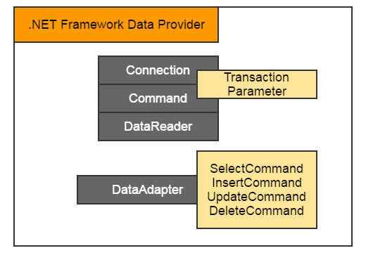
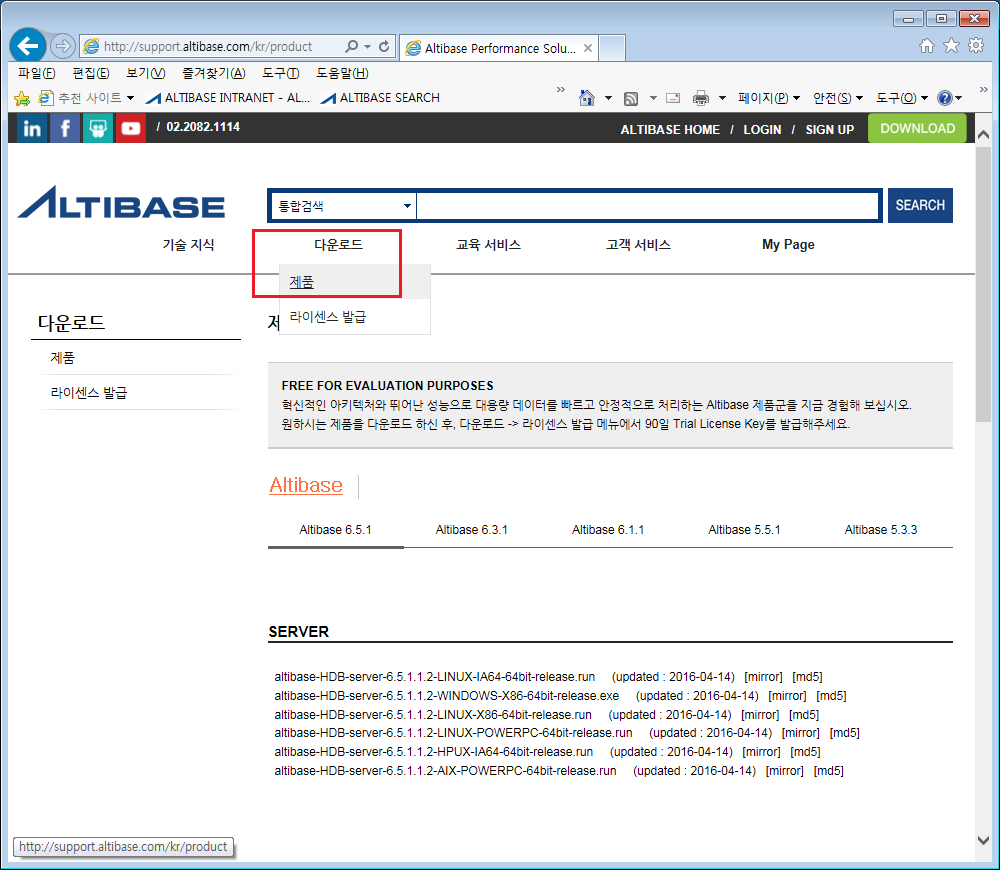
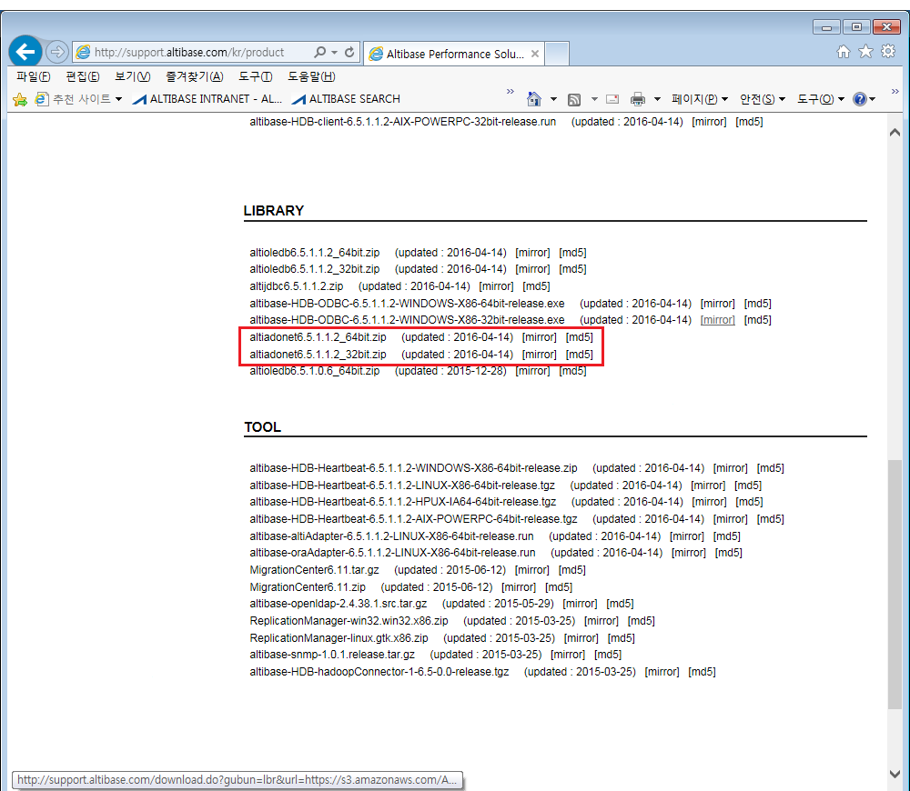
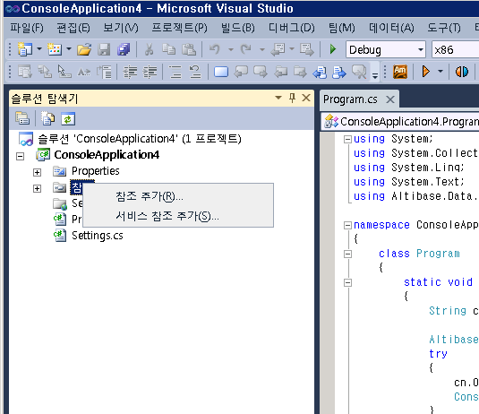
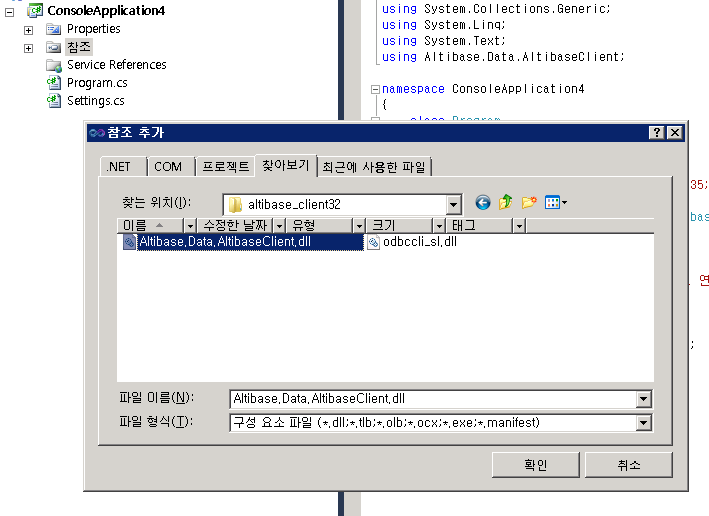
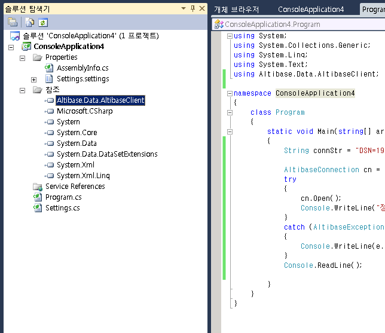
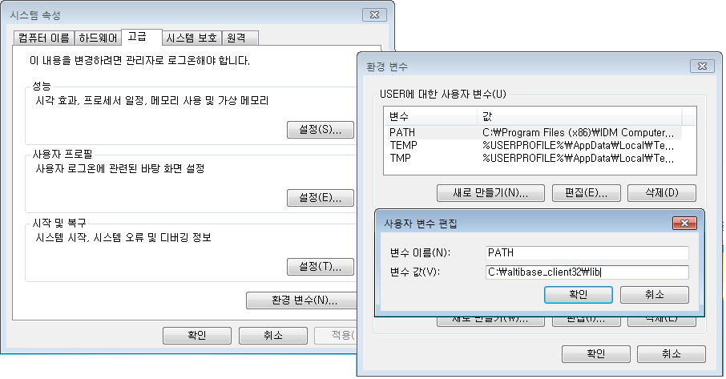
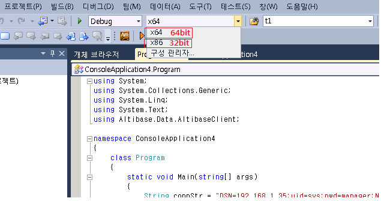

This chapter describes how to donwload and install Altibase.Data.Client.dll for ALTIBASE application development in WINDOW ADO.NET environment. For more detailed information on ADO.net, please refer to the "Application Program Interface User's Manual".
ADO.NET
ADO.NET refers to a method designed to provide consistent access to data sources such as XML as well as data sources connection with OLEDB and ODBC. Components of ADO.NET can be largely classified into .NET Framework Data Provider and DataSet, and Altibase can provide the ones related to the .NET Framework Data Provider.
Classification | Description |
|---|---|
.NET Framework Data Provider | Components designed for data manipulation and high-speed data access
|
DataSet | Components designed to allow access to data regardless of data source |
The detailed components of .NET Framework Data Provide are as follows.

| Class | Description |
|---|---|
| Connection | Provide connectivity to data sources |
| Command | Query the connected DB |
| DataReader | Read records from the connected DB |
| DataAdapter | Fill data in the DataSet object |
In the source example to be introduced later in this chapter, a brief usage example of Connection, Command, DataReader, DataAdapter provided by ALTIBASe will be explained.
Requirments
The environment required to use Altibase ADO.NET provided is as follows.
- .NET Framework
It is recommended to use the .NET Data Provider included in the Altibase HDB package with .NET Framework 2.0 or later, and Entity Framework with .Net Framework 3.5 SP1 or later. - Different .NET data provides depending on the ADO.NET version
Different library files are provided depending on the ADO.NET version, so appropriate libraries must be used for the ADO.NET version. - Altibase CLI library
Since the Altibase HDB .NET Data Provider connects to the database server using the Altibase CLI library, the Altibase CLI library must be installed. It is provided as standard in the Altibase HDB (server or client) package. - DTC system service
DTC system service must be installed to perform a distributed transaction. In addition, Altibase HDB .Net Data Provider performs a distributed transaction by integrating with XA transaction, the "XA transaction" option must be activated when setting DTC
Downloading ADO.NET DLL
Go to http://support.altibase.com, go to "Download" -> "Product", download altiadonetX.X.X_32/64bit.zip from the LIBRARY Section, and extract the ADO.NET DLLs.
In order to get the same version as the server package, use the same version in the "CLIENT" section.
(If the previous version is not on the website, please contact Q&A bulletin board at http://support.altibase.com/en)

(At the time of writing this document, the altiadonet6.5.1.2_64/32.zip file has been uploaded to the latest.)
Installing ADO.NET DLL
If installing for the first time, download and install the WINDOWS CLIENT package. There is no separate complicated process in the installation file, so it is not described separately in this document.
In general, after installing the package or extracting the compressed file, the user can check the files named "Altibase.Data.AltibaseClient.dll" and "odbccli_sl.dll". (Located in %ALTIBASE_HOME%/lib during installation)
Compiling ADO.NET Application
This section describes the process of compiling an application using Altibase ADO.NET Data Provider in the Visual Studio IDE environment.
1. Open a new project
Open the File->New->Project menu and create a new project as shown below.
2. Register Altibase ADO.NET Data Provider by adding reference
Add "Altibase.Data.AltibaseClient.dll" by right-clicking on "References" in the left project explorer tree and adding a reference as shown below.
1) Right-click on a reference and click "Add Reference"

2) In the dialog window, go to the Altibase.Data.AltibaseClient.dll path and complete the setting.
When the reference addition is completed, the "Altibase.Data.AltibaseClient" Altibase ADO.NET provider is added to the reference tree of the solution explorer as follows.

3. Make odbccli_sl.dll be included in the dynamic library path.
ALTIBASE's ADO.NET library always needs the odbccli_sl.dll file. Therefore, it must be located in a path that can refer to odbccli_sl.dll. There are two ways to refer to odbccli_sl.dll as follows.
3.1 To place the executable file in the folder
If odbccli_sl.dll is placed in the same folder as the executable file, it is referred to in the current path of the executable file.
3.2 To add the path where the odbccli_sl.dll library is located in the environment variable PATH
This is a method of adding the path where odbccli_sl.dll is located in the environment variable PATH. If odbccli_sl.dll is in C:\altibase_client32\lib, add it to PATH as below. Visual Studio can recognize the changed contents of the PATH environment variable only after rerunning Visual Studio.

Note
Suitable Library must be used for the compilation bit-type of Visual Studio.
Visual Studio allows the user to select 64bit or 32bit for the application's compilation bit with an option.

Preparation Completed
After installing the two files as above, environment preparation for using the ADO.NET provider is completed.
{kind=link}
{kind=link}
{kind=link}
{kind=link}
{kind=link}
{kind=link}
{kind=link}
{kind=link}
{kind=link}
{kind=link}